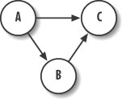
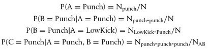

|
|
< Day Day Up > |
|
13.5 Kung Fu FightingFor our final example we're going to assume we're writing a fighting game and we want to try to predict the next strike the player will throw. This way, we can have the computer-controlled opponents try to anticipate the strike and defend or counter accordingly. To keep things simple, we're going to assume the player can throw one of three types of strikes: punch, low kick, or high kick. Further, we're going to keep track of three-strike combinations. For every strike thrown we're going to calculate a probability for that strike given the previous two strikes. This will enable us to capture three-strike combinations. You easily can keep track of more, but you will incur higher memory and calculation costs because you'll end up with larger conditional probability tables. 13.2.13 The ModelThe Bayesian network we're going to use for this example is shown in Figure 13-10. Figure 13-10. Strike networkIn this model, we call the first strike in the combination event A, the second strike event B, and the third strike event C. We assume that the second strike thrown, event B, in any combination is dependent on the first strike thrown, event A. Further, we assume that the third strike thrown, event C, is dependant on both the first and second strikes thrown, events A and B. Combinations can be anything—punch, punch, high kick; or low kick, low kick, high kick; and so on. 13.2.14 Calculating ProbabilitiesOrdinarily we would need to calculate probabilities for A and conditional probabilities for B given A, and conditional probabilities for C given A and B. However, in this example we're always going to observe A and B rendering their prior probabilities irrelevant. Therefore, we need only calculate conditional probabilities for C given every combination of A and B. Because three states exist for each strike event A and B, we'll have to track nine possible combinations of A and B. We'll again take a frequency approach to determining these conditional probabilities. After every strike thrown by the player, we'll increment a counter for that strike given the two prior strikes thrown. We'll end up with a conditional probability table that looks like the one shown in Table 13-10.
This table shows the probability of strike C taking on each of the three values—punch, low kick, or high kick—given every combination of strikes thrown in A and B. The probabilities shown here are subscripted with indices indicating rows and columns to a lookup matrix. We're going to use these indices in the example code we'll present shortly. To calculate these probabilities, we need to keep track of the total number of strikes thrown. We then can calculate probabilities such as these: These are just a few examples; we can calculate all the conditional probabilities in this manner. In these equations, N represents the number of strikes thrown and N with a subscript represents the number of a particular strike thrown given previously thrown strikes. For example, Npunch-punch-punch is the number of times A, B, and C all equal punch. In practice you don't have to store probabilities; the frequencies are sufficient to use to calculate probabilities when required. In this case, we'll store the frequencies of strike combinations in a 9 x 3 matrix. This matrix will represent counters for all outcomes of C corresponding to all nine combinations of A and B. We'll also need a nine-element array to store counters for all nine combinations of A and B. 13.2.15 Strike PredictionNow, to make a prediction for the next strike, C, look at which two strikes, A and B, were thrown most recently and then look up the combination in the conditional probability table for C. Basically, use A and B to establish which row to consider in the conditional probability matrix, and then simply pick the strike for C that has the highest probability. That is, pick the column with the highest conditional probability. We've put together a little example program to test this approach. We have a window with three buttons on it corresponding to punch, low kick, and high kick. The user can press these in any order to simulate fighting moves. As he throws these strikes, the conditional probabilities we discussed earlier are updated and a prediction for the next strike to be thrown is made. Example 13-1 shows the core function that performs the calculations for this program. Example 13-1. Strike prediction
TStrikes ProcessMove(TStrikes move)
{
int i, j;
N++;
if(move == Prediction) NSuccess++;
if((AB[0] == Punch) && (AB[1] == Punch)) i = 0;
if((AB[0] == Punch) && (AB[1] == LowKick)) i = 1;
if((AB[0] == Punch) && (AB[1] == HighKick)) i = 2;
if((AB[0] == LowKick) && (AB[1] == Punch)) i = 3;
if((AB[0] == LowKick) && (AB[1] == LowKick)) i = 4;
if((AB[0] == LowKick) && (AB[1] == HighKick)) i = 5;
if((AB[0] == HighKick) && (AB[1] == Punch)) i = 6;
if((AB[0] == HighKick) && (AB[1] == LowKick)) i = 7;
if((AB[0] == HighKick) && (AB[1] == HighKick)) i = 8;
if(move == Punch) j = 0;
if(move == LowKick) j = 1;
if(move == HighKick) j = 2;
NAB[i]++;
NCAB[i][j]++;
AB[0] = AB[1];
AB[1] = move;
if((AB[0] == Punch) && (AB[1] == Punch)) i = 0;
if((AB[0] == Punch) && (AB[1] == LowKick)) i = 1;
if((AB[0] == Punch) && (AB[1] == HighKick)) i = 2;
if((AB[0] == LowKick) && (AB[1] == Punch)) i = 3;
if((AB[0] == LowKick) && (AB[1] == LowKick)) i = 4;
if((AB[0] == LowKick) && (AB[1] == HighKick)) i = 5;
if((AB[0] == HighKick) && (AB[1] == Punch)) i = 6;
if((AB[0] == HighKick) && (AB[1] == LowKick)) i = 7;
if((AB[0] == HighKick) && (AB[1] == HighKick)) i = 8;
ProbPunch = (double) NCAB[i][0] / (double) NAB[i];
ProbLowKick = (double) NCAB[i][1] / (double) NAB[i];
ProbHighKick = (double) NCAB[i][2] / (double) NAB[i];
if((ProbPunch > ProbLowKick) &&
(ProbPunch > ProbHighKick))
return Punch;
if((ProbLowKick > ProbPunch) &&
(ProbLowKick > ProbHighKick))
return LowKick;
if((ProbHighKick > ProbPunch) &&
(ProbHighKick > ProbLowKick))
return HighKick;
return (TStrikes) rand() % 3; // Last resort
}
This function takes a TStrikes variable called move as a single parameter. TStrikes is simply an enumerated type defined as shown in Example 13-2. Example 13-2. TStrikes
enum TStrikes {Punch, LowKick, HighKick};
The move parameter represents the most recent strike thrown by the player. The ProcessMove function also returns a value of type TStrikes representing the predicted next strike to be thrown by the player. 13.2.1 BookkeepingUpon entering ProcessMove, the global variable, N, is incremented. N represents the total number of strikes thrown by the player. Further, if the most recently thrown strike, move, is equal to the previously predicted strike, Prediction, the number of successful predictions, NSuccess, gets incremented. The next task performed in ProcessMove is to update the conditional probability table given the most recently thrown strike, move, and the two preceding strikes stored in the two-element array AB. AB is defined as shown in Example 13-3. Example 13-3. Global variables
int NAB[9];
int NCAB[9][3];
TStrikes AB[2];
double ProbPunch;
double ProbLowKick;
double ProbHighKick;
TStrikes Prediction;
TStrikes RandomPrediction;
int N;
int NSuccess;
Because the conditional probability table is stored in a 9 x 3 array, NCAB, we need to find the appropriate row and column for the entry with which we'll increment given the most recent strike and the previous two strikes. Calling NCAB a conditional probability table is not exactly correct. We don't store probabilities. Instead we store frequencies and then use these frequencies to calculate probabilities when we need to do so. At any rate, the first set of nine if-statements in ProcessMove checks all possible combinations of the strikes stored in AB to determine which row in the NCAB matrix we need to update. The next set of three if-statements determines which column in NCAB we need to update. Now we can increment the element in NCAB corresponding to the row and column just determined. We also increment the element in NAB corresponding to the row we just determined. NAB stores the number of times any given combination of A and B strikes was thrown. The next step is to shift the entries in the AB array. We want to shift the strike stored in the B position (array index 1) to the A position (array index 0), bumping off the value that was previously stored in the A position. Then we put the most recently thrown strike, move, in the B position to make our prediction and for the next go around through this function. 13.2.2 Making the PredictionAt this point, we're ready to make a prediction for the next strike to be thrown. The next set of nine if-statements determines which row in the NCAB matrix we need to consider given the new pattern of strikes stored in AB. We use the row thus determined to look up the frequencies in the NCAB matrix corresponding to each of the three possible strikes that can be thrown. Keep in mind these frequencies are conditional given the pattern of strikes stored in AB. The next step is to calculate the actual probabilities, ProbPunch, ProbLowKick, and ProbHighKick, by simply dividing the retrieved frequency for each particular strike by the total number of times the combination of strikes stored in AB have been thrown. Finally, the function makes its prediction of the next strike by returning the strike with the highest probability. For the unlikely case in which all the probabilities are equal, we simply return a random guess. Technically speaking, we probably should have put a few more checks in place to capture cases in which two of the three strikes had equal probabilities that were higher than the third. In this case, a random guess between the two strikes with equal probability could be made. Through repeated testing we found that the computer, using this method, achieves a success rate for predicting the next strike to be thrown of 60% to 80%. This is as opposed to a 30% success rate if the computer just makes random guesses every time a strike is thrown. Also, if the player happens to find a favorite combination and uses it frequently, the computer will catch on fairly quickly and its success rate will increase. As the player adjusts his combinations in light of the computer getting better at defending his other combinations, the success rate will drop initially and then pick up again as the player continues to use the new combinations. This cycle will continue, forcing the player to keep changing his techniques as the computer opponent adapts. | |||||||||||||||||||||||||||||||||||||||||||||||||||||||
|
|
< Day Day Up > |
|